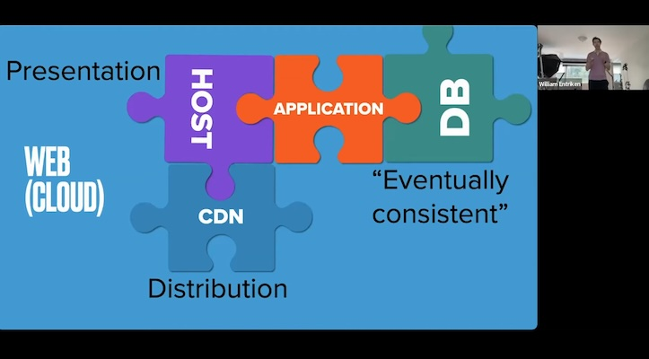
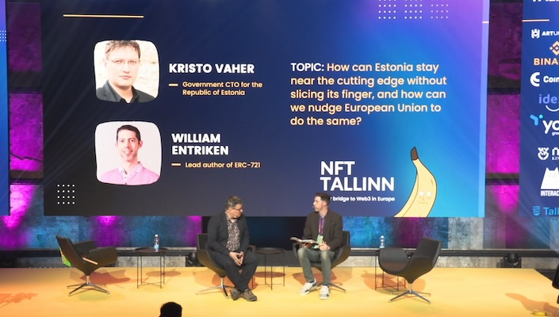
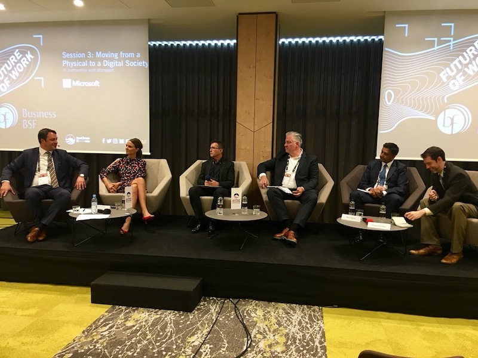
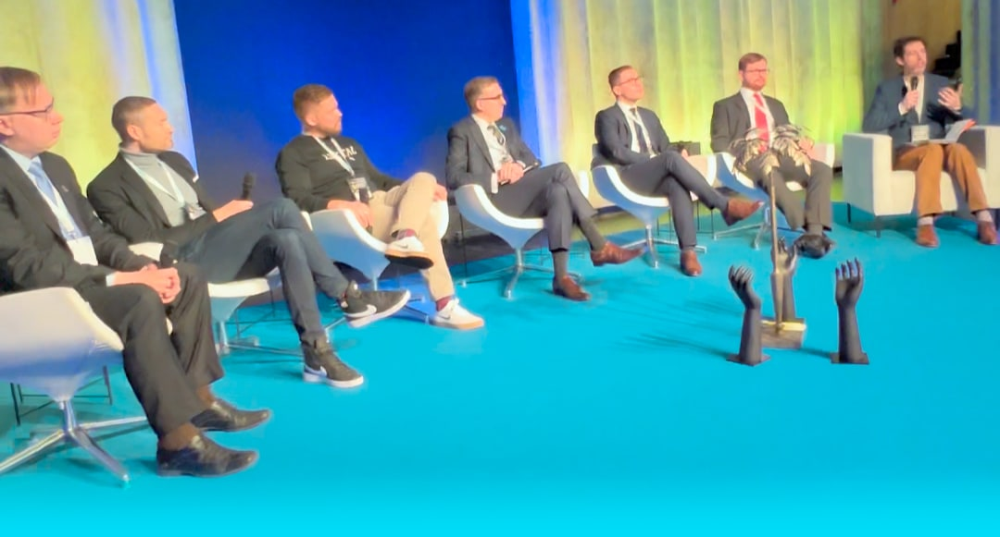

Learn about emerging tech, public policy and entrepreneurship at my workshops and speeches.
Featured talks







Full speaking history
- Every Tuesday. Community Service Hour {% for speaking-event in site.data['speaking-events'] %}
- {{- speaking-event.title | escape -}} {% if speaking-event.coverage %} / {% for coverage in speaking-event.coverage %} {%- if coverage contains 'youtube' -%} {%- elsif coverage contains 'youtu.be' -%} {%- elsif coverage contains 'x' -%} {%- elsif coverage contains '.jpg' -%} {%- else -%} {%- endif -%} {% endfor %} {% endif %} {% endfor %}
Regulatory & policy work
- SEC Crypto Task Force meeting — sat directly with the new SEC Crypto Task Force to discuss blockchain technology design (2025).
- IRS public comments — public comments for IRS gross proceeds and basis reporting by brokers for digital asset transactions (2023).
- USDA proposing immutable ledger technology for agricultural product source verification (with my client CattleProof). This is a USDA Process Verified Program to verify the source of agricultural products and the first to use distributed ledger technology.
Credentials
- Lead author of ERC-721, the document that started the NFT industry
- Completed over USD 100M of ICOs (technical advisor)
- On the Nightfall team (EY, Ernst & Young)
- Led hands-on developer workshops in US, HK, SG, CN, SI, AR, EE in English and Mandarin
- Helped thousands of artists become millionaires, create USD 1B of commerce per week
- Contributor to Solidity project
- Sponsored by Ethereum Foundation and Microsoft (GitHub Sponsors)
- 100+ podcast episodes of product & industry reviews
Press coverage
-
{% for press-coverage in site.data['press-coverage'] %}
- . {{ press-coverage.authors | join: ', ' | escape }}. {{ press-coverage.publication | escape }}. {{ press-coverage.title | escape }}. {% endfor %}
Extra stuff for stalkers
Math
- Chess research with John Tromp — parallel, exhaustive-search problems
- Original research on the entropy function — a new, iterative way to calculate entropy
Active projects you can join
- I am active on GitHub, let's do something awesome together
- KDE contributor and webadmin (commit access to homepage)
Photography
- My wife and I run a boudoir photography studio. Check out https://glamourphilly.com/
Things I made that you can buy
- US Patent Bar Study (iOS) — a tool for students studying for the patent bar exam
- Observance — my first published guitar song iTunes Music Spotify
More music
- Only (and music video) — my award winning remix of Nine Inch Nails's song. Winner in WYSP's First NIN Remix contest (2005), got to meet the band.
- Air — the first track my wife and I made together.
Civic projects
- EMCCC, PA — Eastern Montgomery County Chamber of Commerce, PA, co-chair government affairs committee board.
- SEPTA rail scheduling — I consult with SEPTA to help set their rail schedules. On-time performance tracker. Patent application.
- Philadelphia Traffic Court — successfully petitioned the Philadelphia government to make public their entire database of traffic violations.
Professional associations
- ISPE International Society for Pharmaceutical Engineering, participant blockchain SIG
- Chamber of Commerce participant
- Metaverse Standards Forum participant
- IEEE participant
- Ethereum Enterprise Alliance participant
Contributions / big projects
- Code.mil — helps the US Department of Defense share computer science projects with the public
- Git (2013) — fixed a recursion bug for submodules
- Linux kernel v2.2 (1999) — fixed Realtek ethernet driver
- KDE (2006) — led as a top committer, Google page on contributions
- Jekyll 3.0 contributor
- Archive.org (2006) — collection of AOL Instant Messenger, IMChaos, WebShots